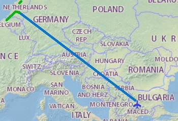
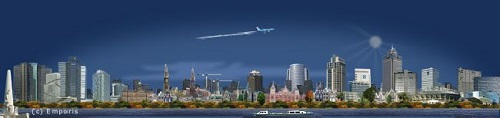
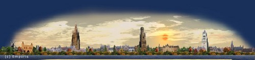
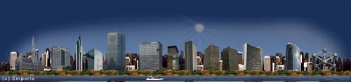

Автомобил: 750 km
Автомобил: 26819 km
Влак: 3972 km
Кораб: 928 km
Общо: 61134 km
Градове: 52
Държави: 20
Континенти: 2
Холандия и Белгия
Купихме си билети до Айндховен Холандия от Wizz air. Планът беше от там да наемем кола и да отидем до Амстердам, после до Брюж, Белгия и през Брюксел обратно до летището в Айндховен. Аз, Хриси и Ваня – приятелка на Хриси от училище. В последствие разбрахме, че ще пътуваме и с Емма, но тя в корема на мама!

Полет София - Айндховен
В този състав една мартенска вечер кацнахме в Холандия. Пандата ни чакаше на плаца за коли под наем. За около час се придвижихме до хотела в Амстердам и се настанихме. Дали бързах, защото бях качил двама сънародници от Варна или просто исках да стигнем преди полунощ, но съм минал някъде с 13 километра над ограничение и съответно си получих глоба по пощата, чак в България.
Амстердам

Канали, къщи, велосипеди. Градът е запазил атмосферата на голямо пристанище. Кръчмите и червените фенери вечер напомнят за времето, когато търговските кораби са пристигали от изток и моряците са харчили заработеното.
След два дни по улиците на Амстердам, потеглихме към известните вятърни мелници и дъскорезници. Смята се, че именно холандците са започнали първи да конструират кораби ползвайки вятърни дъскорезници. Отидохме и до брега на Северно море. Красиви плажове и дюни, но студ.

Брюж

Привечер пристигнахме в Брюж. Настанихме се в хостел и веднага се разходихме в града. Красиво и подредено. На другия ден отново се потопихме в средновековната атмосфера на градчето. Качихме се на кулата Белфорт , гледката към площада е супер.
Брюксел

Последния ден от краткото ни но приятно пътуване посветихме на Брюксел. Като столица градът е събрал всякакви националности и това го прави малко по – негостоприемен. Разгледахме централния площад и сградите наоколо.
Спокойно се върнахме отново в Холандия, оставихме колата на плаца пред летището и си взехме обратния полет към София. Лежерно и зареждащо пътуване, точно каквото си го пожелахме.